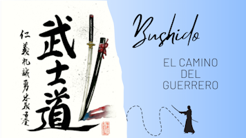
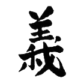
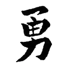
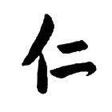
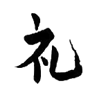
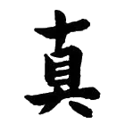
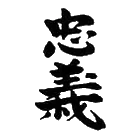

Bushido
Bushido significa “el camino del guerrero” dentro de la cultura japonesa. Se trata de un código ético y filosófico que surgió en el Japón feudal y se convirtió en la base de la conducta samurái. Este código abarcaba una amplia gama de principios y valores que regulaban la vida de los samuráis y marcaban su comportamiento en el campo de batalla, así como en la vida diaria. A lo largo de la historia, el bushido ha dejado una profunda huella en la cultura japonesa y ha influido en la forma en que los japoneses se ven a sí mismos y a su sociedad.
El bushido se basa en siete virtudes principales que los samuráis debían cultivar: rectitud, coraje, benevolencia, respeto, honestidad, honor y lealtad. Cada una de estas virtudes se consideraba esencial para forjar el carácter del samurái y vivir una vida honorable y digna. Te las detallamos a continuación:

Gi
La rectitud (gi) se refiere a la integridad y la honestidad en todas las acciones y decisiones. Un samurái debía ser justo y ético en todo momento, seguir los principios morales y nunca desviarse del camino correcto.

Yu
El valor (yu) era fundamental en la vida de un samurái. No solo se refería a la valentía en el campo de batalla, sino también al coraje moral de enfrentar las adversidades y luchar por lo que es justo y honorable.

Jin
Compasión (Jin) implicaba tener compasión y preocuparse por los demás. Un samurái debía ser amable y considerado, mostrando empatía y ayudando a aquellos que eran más débiles o necesitaban protección.

Rei
Respeto (Rei) era un valor central en el Bushido. Los samuráis debían mostrar un profundo respeto por sus superiores, sus compañeros y el orden social establecido. El respeto también se extendía a la naturaleza y a todos los seres vivos.

Makoto
La sinceridad (makoto) requería sinceridad y veracidad en todas las palabras y acciones. Un samurái debía ser honesto consigo mismo y con los demás, manteniendo su palabra y actuando con integridad en todo momento.

Chugi
La lealtad (chugi) era una virtud fundamental en el Bushido. Los samuráis debían ser leales a su señor, a su familia y a sus compañeros samuráis. La lealtad era considerada la virtud más alta y exigía sacrificio personal en beneficio de aquellos a quienes se servía.